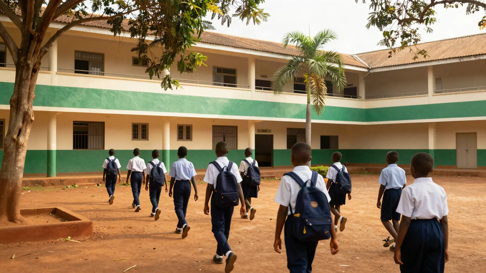
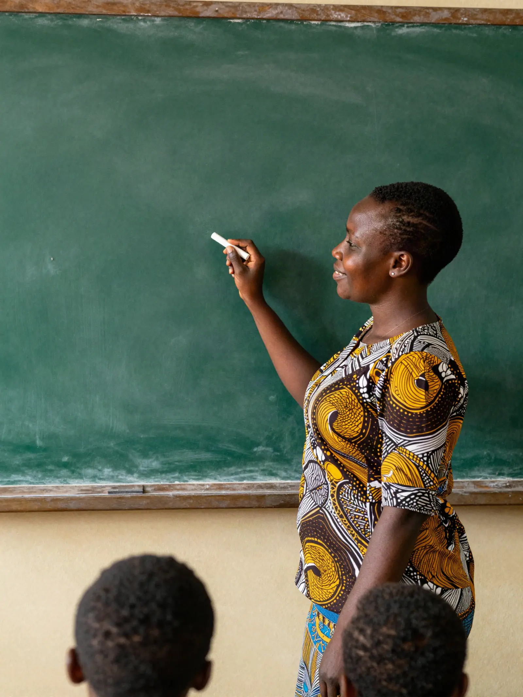
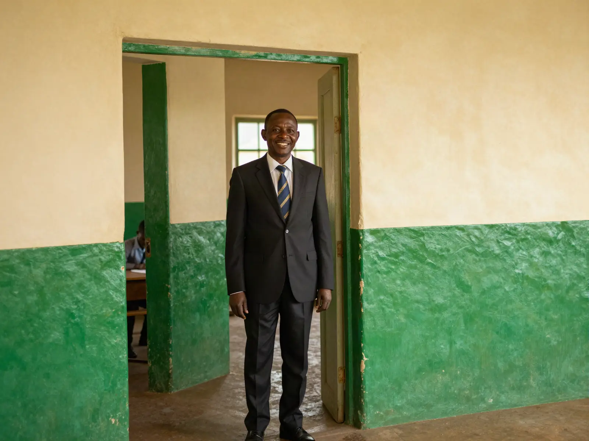
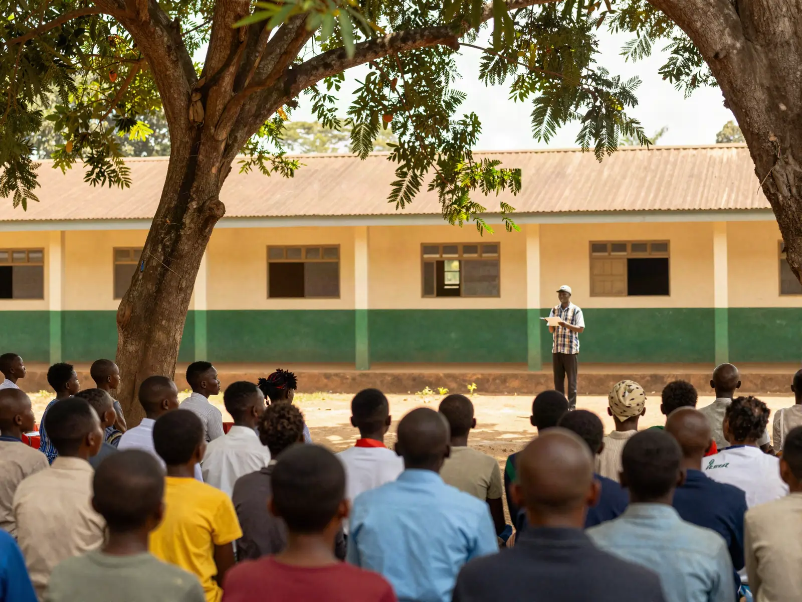
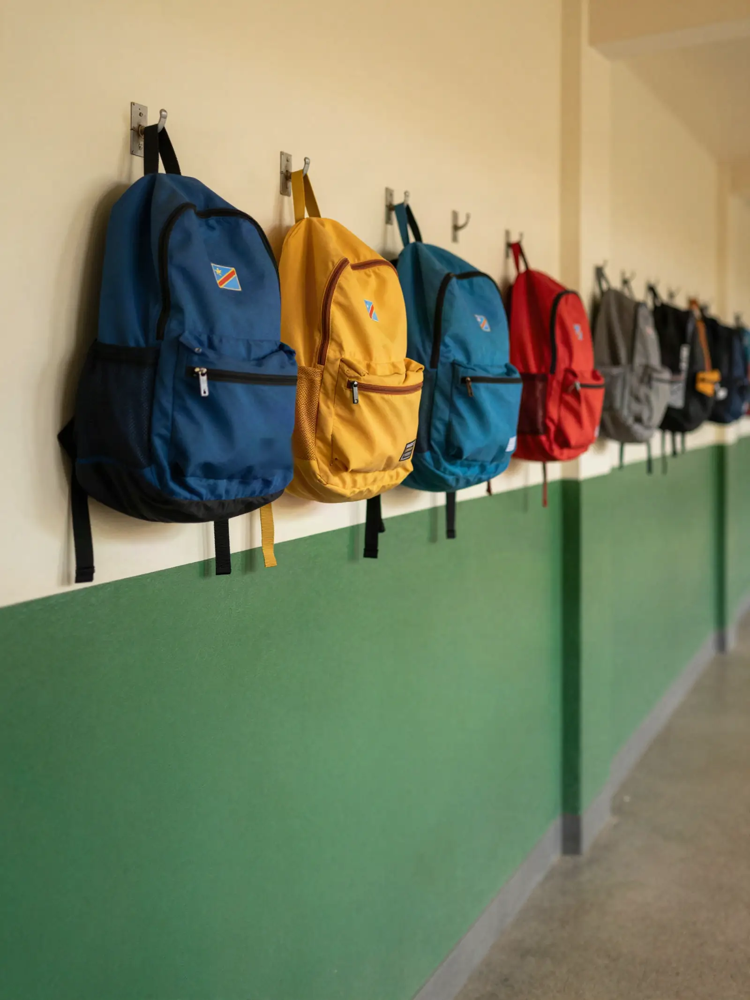

Élèves & classes
Un dossier par élève qui le suit d'une année à l'autre. Classes, cycles, titulaires, responsables.
En savoir plusIdentité, classe, notes, présences, frais : tout le suit, d'année en année.
Chacun ne voit que ce qui le regarde. Le serveur en décide, jamais le navigateur.
Corriger une note crée une version. L'ancienne reste, datée.
Il compte, cherche et explique. Il ne peut rien modifier.
Ce que la secrétaire, le professeur, la caisse et le directeur des disciplines notent chacun de leur côté se retrouve au même endroit — dans le dossier de l'élève.
Voir comment ça marcheUn dossier par élève qui le suit d'une année à l'autre. Classes, cycles, titulaires, responsables.
En savoir plusL'appel en quelques touches, classe par classe. Retards pointés au portail, absences justifiées.
En savoir plusMoyennes et rangs calculés par le serveur. Bulletins PDF, publiés seulement à la proclamation.
En savoir plusÉchéanciers en tranches, paiements confirmés par la caisse, un reçu numéroté pour chacun.
En savoir plusRetards, absences, incidents, capital de points. Klassio signale ; l'école décide.
En savoir plus32 fonctions, une seule donnée. Toutes existent dans Klassio aujourd'hui — et toutes se visitent dans la démonstration.
Voir la démoExcel, cahiers, WhatsApp, reçus papier, registres, relevés bancaires. Chaque établissement jongle avec des processus séparés, et recopie les mêmes noms d'un endroit à l'autre.
Le même élève, un seul dossier. Ce qui était dispersé entre six supports converge vers une seule source.
Élèves, classes, présences, résultats, frais, discipline : reliés entre eux, toujours à jour, sans qu'on ait à les synchroniser.
Chaque rôle lit la même donnée, dans son périmètre. Personne ne travaille sur une copie — donc personne ne travaille sur une copie périmée.
Effectifs, encaissements, présences, résultats : la Direction voit tout, à jour, sans rien recompter à la main.
Résultats, présences, frais et reçus, depuis son téléphone. Une période n'apparaît qu'une fois proclamée par l'école.
Retards, absences et incidents consignés en quelques touches. Klassio signale les seuils atteints ; la décision reste à l'école.
Écrans du logiciel · données fictives
L'appel se fait en quelques touches, classe par classe. Avant huit heures, la Direction sait qui est là.
Chaque paiement est enregistré par la caisse, chaque reçu numéroté. Le parent voit ce qu'il a payé, et ce qui reste.
Prêt à imprimer. Il n'est publié aux parents qu'au moment où l'école décide de proclamer.
Votre école sait déjà tout. Klassio fait en sorte que chacun le sache — au bon moment, et sans jamais rien recopier.

Klassio réunit ce qui est aujourd'hui dispersé — registres papier, cahiers de notes, carnets de reçus, messages WhatsApp — autour d'un dossier numérique cohérent pour chaque élève.
Questions fréquentesSans framework lourd : pensées pour une connexion irrégulière.
Année scolaire, périodes, proclamation, minerval.
Et seulement le sien — le serveur le vérifie à chaque requête.
La maternelle a ses appréciations, le primaire et le secondaire leurs notes.
La Direction s'inscrit. L'espace est isolé : aucune autre école n'y accède, jamais.
Un par un, ou par import Excel. Klassio signale les anomalies et n'écrit rien avant votre confirmation.
Professeurs, discipline, parents. Chaque accès vient d'une invitation, et se révoque.
L'enseignant fait l'appel de ses classes. Le DD suit les retards. La Direction voit l'ensemble.
Permissions granulaires, historique complet, isolation totale entre établissements. La confiance se construit sur des faits, pas des promesses.
Chaque rôle ne voit que ce qui lui est autorisé.
Chaque action importante reste traçable dans le temps.
Les données d'un établissement restent les siennes.
Les opérations sensibles sont vérifiées côté serveur.
Chaque chiffre a une source, chaque décision laisse une trace.
Le parent voit son enfant, et seulement le sien.
Rien n'est écrasé : l'histoire d'un élève le suit d'année en année.
L'appel, la leçon, la caisse, la proclamation : les moments d'une année scolaire, chacun à sa place dans le dossier de l'élève.




Les réponses courtes. Pour les guides pas à pas — créer son espace, importer ses élèves, publier les résultats — le centre d'aide.
Ouvrir le centre d'aideUne plateforme de gestion scolaire qui réunit les informations et les opérations d'un établissement autour d'un dossier numérique par élève : identité, classe, responsables, résultats, présence, discipline, documents, paiements et reçus.
Aux établissements scolaires — maternelle, primaire, secondaire — et à leurs quatre publics : la Direction, les enseignants, le Directeur des disciplines et les parents. Il n'existe pas de compte élève : l'élève est au centre du système, pas un utilisateur.
La Direction crée l'espace de l'établissement, ajoute ses classes et ses élèves — un par un ou par import d'un fichier — puis invite son équipe et les familles. Comptez une après-midi pour une école de taille moyenne.
Personne ne crée de compte librement. La Direction génère un lien unique, valable 7 jours, utilisable une seule fois, et qui porte déjà le périmètre : les classes d'un enseignant, les enfants d'un parent.
Une invitation se révoque à tout moment — y compris après avoir été acceptée. La personne perd alors l'accès, sans qu'aucune donnée ne soit supprimée.
Non. Un parent ne voit que les enfants auxquels l'établissement l'a rattaché. Le lien est résolu par le serveur à chaque requête : envoyer l'identifiant d'un autre élève depuis le navigateur ne donne rien.
Chaque établissement est isolé des autres : une ressource qui ne lui appartient pas répond « introuvable », jamais une liste vide. Le rôle, l'établissement et le périmètre viennent toujours de la session serveur, jamais du navigateur.
Le détail des principes est sur la page Sécurité.
Vous déposez votre fichier. Klassio détecte les colonnes, vous montre ce qu'il a compris et signale les anomalies — un montant payé supérieur au montant dû, par exemple. Rien n'est écrit avant votre confirmation.
Les résultats entrent dans Klassio par l'import de la Direction. Les familles ne voient une période qu'une fois proclamée par la Direction. Importer n'est pas publier : ce sont deux décisions distinctes.
Corriger un résultat crée une version : l'ancienne est conservée, datée. Rien n'est écrasé.
L'établissement définit ses frais, éventuellement répartis en tranches avec leurs échéances. Le parent voit ce qui est dû, ce qui est payé et ce qui vient.
Aucune intégration Mobile Money ou bancaire n'est active à ce jour. Une demande de paiement est transmise à l'établissement, qui la confirme après vérification réelle de la transaction. Klassio n'affiche jamais « paiement réussi » sans cette confirmation.
Un reçu numéroté est émis à chaque paiement confirmé. La Direction les retrouve dans Finance → Paiements ; le parent dans Frais & reçus. L'assistant peut aussi le retrouver pour vous.
Il lit vos données et répond dans les limites de votre rôle : compter, chercher, résumer, expliquer, retrouver un reçu.
Il est en lecture seule. Il ne peut ni créer, ni modifier, ni supprimer, ni payer, ni inviter, ni sanctionner. Ce n'est pas un réglage : le module n'a aucune capacité d'écriture.
Paramètres → Abonnement Klassio. Vous y voyez le statut, la période d'essai, la formule et l'estimation mensuelle.
L'abonnement Klassio est payé par l'établissement. Il n'a rien à voir avec les frais scolaires réglés par les familles.
Paramètres → Supprimer mon compte. Votre mot de passe vous est redemandé.
Vos données personnelles sont supprimées. Les données scolaires — dossiers des élèves, résultats, pièces comptables — appartiennent à l'établissement et sont conservées.
Par le formulaire de contact. Précisez votre établissement et le type de demande : nous répondons par email.
Une question sur Klassio, un problème rencontré, une suggestion ? Dites-nous de quoi il s'agit : nous revenons vers vous par e-mail.
Merci. Nous revenons vers vous par email.